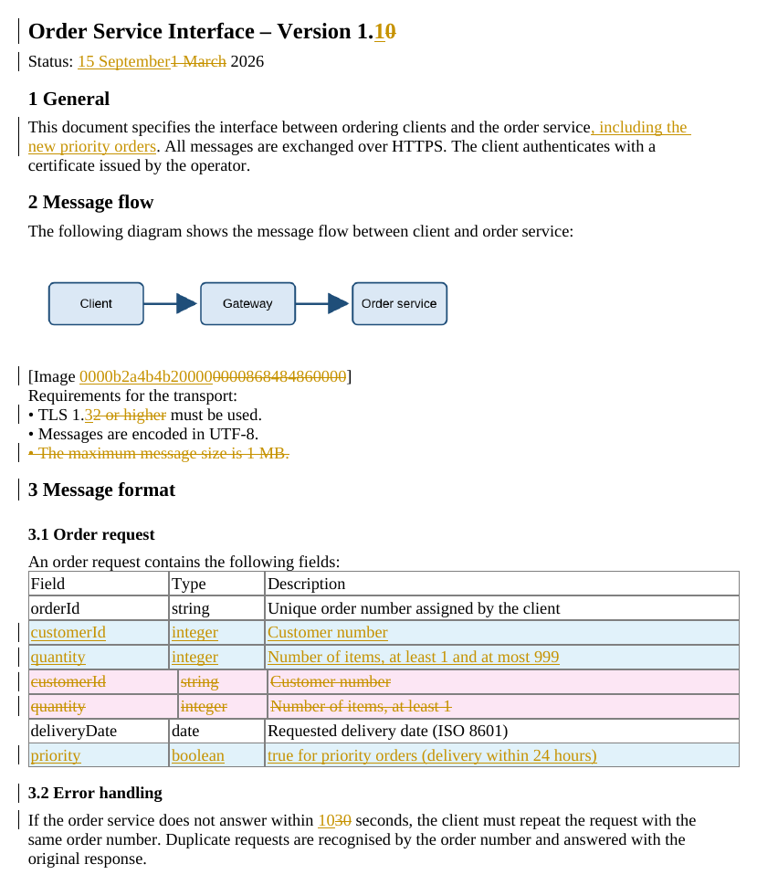

Example
Two versions of a specification as PDF
Version 1.1 of a (fictitious) order service interface differs from version 1.0 in a few places: a sentence was extended, a list item removed, field types and descriptions changed, a table row added, a time-out shortened, and the diagram got a new component.
Convert both PDFs to ODT
java -jar pdf2odt.jar order-interface-1.0.pdf order-interface-1.0.odt
java -jar pdf2odt.jar order-interface-1.1.pdf order-interface-1.1.odtCompare the ODT files in LibreOffice Writer
Open order-interface-1.1.odt in Writer and choose
Edit → Track Changes → Compare Document with order-interface-1.0.odt.
Writer marks inserted text underlined and deleted text struck through, with change bars in the margin:

[Image …] line.What the conversion does
Text and headings
Paragraphs are rebuilt from the line spacing, hyphenation is resolved, and headings with their outline level are recognised from bold fonts and numbering.
Tables
Tables are detected by their grid lines, including merged cells. Tables and rows split by a page break are joined, repeated header rows dropped.
Images and drawings
Images and vector drawings become images with a perceptual hash below them, so that a changed image is visible as a changed line of text.
Less noise
Page headers and footers are removed and paragraphs are joined across page breaks, so that page layout differences are not marked as changes.
Usage
Requirements: Java 25 (Linux, Windows or macOS). Download pdf2odt.jar from the latest release on GitHub and run:
java -jar pdf2odt.jar input.pdf output.odtOr build the self-contained jar yourself with Maven:
mvn package
java -jar target/pdf2odt.jar input.pdf output.odtLimitations
- LibreOffice Writer compares tables only as a whole. pdf2odt therefore writes every table row as a separate table, so a change marks the affected row, not single words within it.
- Tables are only recognised if they have grid lines.
- Labels inside drawings are part of the image; small changes there may not change the image hash.
- The goal is comparable text, not a faithful reproduction of the PDF layout.